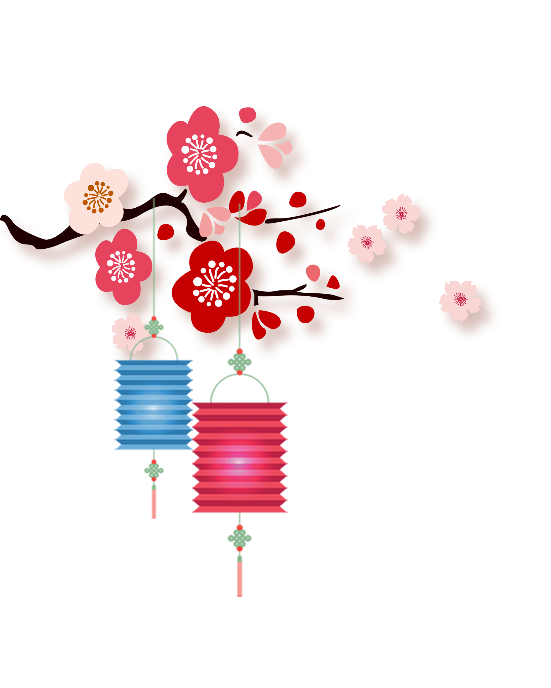

Chinese New Year, also known as Spring Festival or Lunar New Year, is the grandest festival in China, with a 7-day long holiday. As the most colorful annual event, the traditional CNY celebration lasts longer, up to two weeks, and the climax arrives around the Lunar New Year's Eve.
China during this period is dominated by iconic red lanterns, loud fireworks, massive banquets and parades, and the festival even triggers exuberant celebrations across the globe.
In 2023 Chinese New Year festival falls on Jan. 22. It is the Year of the Rabbit according to the Chinese zodiac, which features a 12-year cycle with each year represented by a specific animal. People born in the Years of the Rabbit including 1939, 1951, 1963, 1975, 1987, 1999, and 2011 will experience their Zodiac Year of Birth (Ben Ming Nian). 2024 Chinese New Year falls on Feb. 10 and it is the Year of the Dragon.
Like Christmas in Western countries, Chinese New Year is a time to be home with family, chatting, drinking, cooking, and enjoying a hearty meal together.
Unlike the universal New Year observed on January 1st, Chinese New Year is never on a fixed date. The dates vary according to Chinese lunar calendar, but generally fall on a day between January 21st and February 20th in the Gregorian calendar.
How long is the festival? Most people in China have at least seven days off work, including three days' legal holiday, and the preceding and following weekends. Here's a CNY timetable for recent years, marked in UTC/GMT+08:00.
__ Chinese New Year 2023: Dates & Calendar __The festival date is in January or February, around the Chinese solar term the 'Beginning of Spring', so it is also named the 'Spring Festival'.
When all streets and lanes are decorated with vibrant red lanterns and colorful lights, the Lunar New Year is approaching. What do Chinese people do then? After half a month's busy time with a house spring-clean and holiday shopping, the festivities kick off on the New Year's Eve, and last 15 days, until the full moon arrives with the Lantern Festival. Scroll down and let's look through the core traditions and practices of the Chinese New Year.
No matter whether in a city apartment or a countryside villa, there must be a diligent housewife exerting all her energies to carry out a thorough clean of the house before Chinese New Year. Sweeping, mopping, wiping, washing… Sometimes the whole family needs to give a hand with the chores, to make sure the house is rid of the old year's dust and is prepared for taking in the fortune of the New Year. Then every house is decorated with the most favored color, the bright Red – red lanterns, Chinese knots, Spring Festival couplets, 'Fu' character pictures, and red window paper-cuts. Read more about How to Decorate for Chinese New Year.
From newborn babies to teenagers, luck money will be given by seniors, wrapped in red packets in the hope of dispelling evil spirits from the kids. CNY 100 to 500 notes are commonly sealed in a red envelope, while there are big ones with up to CNY 5,000 especially in the rich southeast regions. Besides a small disposable amount, most of the money is used to buy the kids toys, snacks, clothes, stationery, or saved for their future educational expenditure. Read more about Red Envelope.